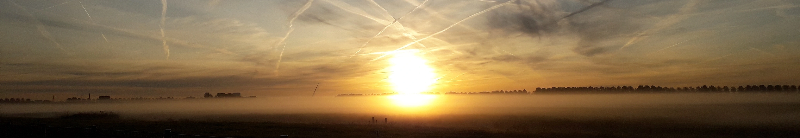

Welkom!
Welkom
Een eigen website? Is dat niet iets uit de vroege jaren 2000? Ja, dat klopt, maar ik ben ook ouderwets. Omdat ik geen smartphone of sociale media heb, heb ik deze website gemaakt waar ik dingen kan delen met anderen. Op deze website is informatie over mij te vinden die ik publiekelijk wil delen. Hieronder valt wat informatie over mijzelf en mijn projecten, mijn CV, en is er de mogelijkheid om contact met mij op te nemen.
Recente blogposts
Oudere posts zijn te vinden op de blog pagina.